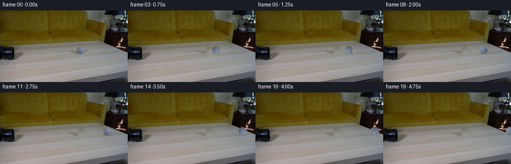
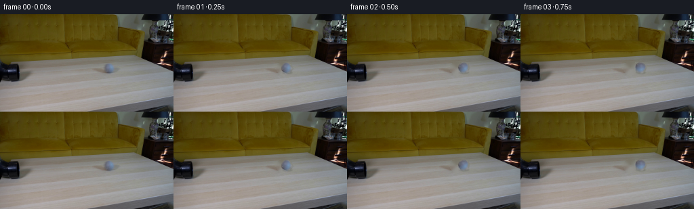

CODING AGENTS AS PIXEL WORLD MODELS
traex/GPT-5.6-Sol · 0022
点击播放 · 原生 RGB 像素
逐轮保存的候选
回放视频、检查图与代码变化。
每份候选均可单独播放。实际图片检查记录在下方工具轨迹中。
候选 01播放与检查图
点击播放 · 原生 RGB 像素


展开代码变化
--- 上一保存版本
+++ 本次保存版本
@@ -0,0 +1,134 @@
+#!/usr/bin/env python3
+"""Generate the locked-camera rolling tennis-ball sequence.
+
+The only scene source is first_frame.png. The small ball already visible in
+that frame is separated from the tabletop, the tabletop beneath it is locally
+reconstructed, and the ball is translated/rotated toward the right while all
+other pixels remain locked.
+"""
+from pathlib import Path
+
+import cv2
+import numpy as np
+from PIL import Image
+
+import artifact_io
+
+
+N_FRAMES = 20
+HEIGHT = 144
+WIDTH = 256
+
+
+def smoothstep(edge0, edge1, x):
+ t = np.clip((x - edge0) / (edge1 - edge0), 0.0, 1.0)
+ return t * t * (3.0 - 2.0 * t)
+
+
+def reconstruct_tabletop(source, cx, cy):
+ """Remove the ball and contact area with a texture-conscious local fill."""
+ yy, xx = np.mgrid[:HEIGHT, :WIDTH]
+ # A compact mask prevents changes anywhere else in this locked-off shot.
+ remove = (((xx - cx) / 11.2) ** 2 + ((yy - (cy + 0.15)) / 10.7) ** 2 <= 1.0)
+ mask = (remove.astype(np.uint8) * 255)
+
+ # Telea interpolation preserves the gentle horizontal wood gradients well.
+ clean = cv2.inpaint(source, mask, 4.0, cv2.INPAINT_TELEA)
+
+ # Reintroduce a trace of the source's fine tabletop grain. Row-wise grain
+ # is sampled immediately beside the removed disk, never from another file.
+ cleanf = clean.astype(np.float32)
+ for y in range(max(0, int(cy - 11)), min(HEIGHT, int(cy + 12))):
+ x0, x1 = int(cx - 12), int(cx + 12)
+ left = source[y, max(0, x0 - 7):max(0, x0 - 2)].astype(np.float32)
+ right = source[y, min(WIDTH, x1 + 2):min(WIDTH, x1 + 7)].astype(np.float32)
+ samples = np.concatenate([left, right], axis=0)
+ if len(samples):
+ # Keep the inpainted large-scale value, transferring only a tiny
+ # zero-mean texture term from adjacent tabletop pixels.
+ lum = samples.mean(axis=1, keepdims=True)
+ grain = (samples - lum).mean(axis=0) * 0.18
+ cleanf[y, max(0, x0):min(WIDTH, x1 + 1)] += grain
+ return np.clip(cleanf, 0, 255).astype(np.uint8)
+
+
+def warp_layer(layer, matrix, interpolation=cv2.INTER_CUBIC):
+ return cv2.warpAffine(
+ layer, matrix, (WIDTH, HEIGHT), flags=interpolation,
+ borderMode=cv2.BORDER_CONSTANT, borderValue=0,
+ )
+
+
+def add_contact_shadow(frame, cx, cy, radius, visibility):
+ """Add a very soft, low-opacity shadow at the ball/table contact."""
+ scale = 4
+ sh = np.zeros((HEIGHT * scale, WIDTH * scale), np.float32)
+ center = (int(round((cx + 1.1) * scale)), int(round((cy + radius * 0.82) * scale)))
+ axes = (int(round(radius * 0.84 * scale)), int(round(radius * 0.20 * scale)))
+ cv2.ellipse(sh, center, axes, 0, 0, 360, 1.0, -1, lineType=cv2.LINE_AA)
+ sh = cv2.GaussianBlur(sh, (0, 0), sigmaX=1.05 * scale, sigmaY=0.62 * scale)
+ sh = cv2.resize(sh, (WIDTH, HEIGHT), interpolation=cv2.INTER_AREA)
+ alpha = np.clip(sh * (0.16 * visibility), 0.0, 0.17)[..., None]
+ # Neutral shadow: preserve local hue and wood texture.
+ return frame * (1.0 - alpha)
+
+
+def build_frames(first):
+ source = first.astype(np.uint8)
+
+ # Numerically identified center/radius of the sole round blue-grey object.
+ # Subpixel placement keeps its 17-pixel silhouette stable during motion.
+ cx0, cy0 = 162.1, 79.5
+ radius = 8.65
+ yy, xx = np.mgrid[:HEIGHT, :WIDTH]
+ dist = np.hypot(xx - cx0, yy - cy0)
+ alpha = 1.0 - smoothstep(radius - 1.20, radius + 0.80, dist)
+ alpha = alpha.astype(np.float32)
+
+ clean = reconstruct_tabletop(source, cx0, cy0)
+
+ # Premultiply before resampling, avoiding dark/bright fringes at the ball's
+ # antialiased boundary when it moves over differently shaded wood.
+ sprite_pm = source.astype(np.float32) * alpha[..., None]
+
+ frames = [source.copy()] # Contract: frame 00 is byte-for-byte identical.
+ for index in range(1, N_FRAMES):
+ # Constant real-time rolling speed. At 4 fps this is 19.2 px/s; the
+ # final ball reaches the table's right edge rather than stopping early.
+ travel = 4.80 * index
+ cx = cx0 + travel
+ # A slight rise follows the tabletop's perspective lines to the right.
+ cy = cy0 - 0.025 * travel
+
+ # Rightward rolling is clockwise in the image plane. Applying the
+ # physically corresponding angular displacement preserves the source
+ # ball's small surface markings instead of inventing new texture.
+ angle_deg = -np.degrees(travel / radius)
+ matrix = cv2.getRotationMatrix2D((cx0, cy0), angle_deg, 1.0)
+ matrix[0, 2] += cx - cx0
+ matrix[1, 2] += cy - cy0
+
+ warped_a = np.clip(warp_layer(alpha, matrix), 0.0, 1.0)
+ warped_pm = np.clip(warp_layer(sprite_pm, matrix), 0.0, 255.0)
+
+ out = clean.astype(np.float32)
+ # Fade the shadow naturally as the ball leaves the image at the end.
+ visibility = float(np.clip((WIDTH + radius - cx) / (2.0 * radius), 0.0, 1.0))
+ out = add_contact_shadow(out, cx, cy, radius, visibility)
+ out = out * (1.0 - warped_a[..., None]) + warped_pm
+ frames.append(np.clip(np.rint(out), 0, 255).astype(np.uint8))
+
+ return np.stack(frames, axis=0)
+
+
+def main():
+ case_dir = Path(__file__).resolve().parent
+ first = np.asarray(Image.open(case_dir / "first_frame.png").convert("RGB"), dtype=np.uint8)
+ if first.shape != (HEIGHT, WIDTH, 3):
+ raise ValueError(f"Expected {(HEIGHT, WIDTH, 3)}, got {first.shape}")
+ frames = build_frames(first)
+ artifact_io.save(frames, case_dir)
+
+
+if __name__ == "__main__":
+ main()
可观测工具轨迹
实际执行的命令与返回图片。
命令 1exit 0
/bin/bash -lc "cat prompt.txt && printf '\\n--- GENERATION_RULES ---\\n' && cat GENERATION_RULES.md"
命令 2exit 0
/bin/bash -lc "find . -maxdepth 2 -type f -printf '%p\\n' | sort && printf '\\n--- tools ---\\n' && command -v ffmpeg || true && command -v python3 || true"
命令 3exit 0
/bin/bash -lc "python3 - <<'PY'
from PIL import Image
im=Image.open('first_frame.png')
print(im.mode, im.size)
print(im.getextrema())
PY"命令 4exit 0
/bin/bash -lc 'cat artifact_io.py'
命令 5exit 0
/bin/bash -lc "python3 - <<'PY'
from PIL import Image
import numpy as np
im=np.array(Image.open('first_frame.png'))
# Print coarse averages 8x8 px blocks converted dominant brightness/color symbols
H,W,_=im.shape
chars=[]
for y in range(0,H,8):
row=''
for x in range(0,W,8):
a=im[y:min(y+8,H),x:min(x+8,W)].mean((0,1)); r,g,b=a
v=a.mean()
if v<35:c='K'
elif v<65:c='k'
elif v<95:c='d'
elif v<125:c='m'
elif v<155:c='n'
elif v<185:c='l'
elif v<220:c='p'
else:c='W'
# hue overrides
if r>g*1.2 and r>b*1.35:c='R'
elif r> b*1.25 and g>b*1.1:c='Y'
elif b>r*1.2:c='B'
elif g>r*1.15:c='G'
row+=c
print(f'{y:3} {row}')
# unique-ish quantiles, row brightness and color mean
print('rows')
for y in range(0,H,4): print(y, np.round(im[y].mean(0),1), np.round(im[y].std(0),1))
PY"命令 6exit 0
/bin/bash -lc "python3 - <<'PY'
from PIL import Image
import numpy as np
im=np.array(Image.open('first_frame.png')).astype(int)
# list connected components for dark and approximately gray regions, across thresholds
from scipy.ndimage import label,find_objects
for name,mask in [
('dark',im.mean(2)<50),('dark90',im.mean(2)<90),
('gray',((im.max(2)-im.min(2))<18)&(im.mean(2)>35)&(im.mean(2)<190)),
('sat',im.max(2)-im.min(2)>60)]:
lab,n=label(mask)
comps=[]
for i,s in enumerate(find_objects(lab),1):
if s:
area=(lab[s]==i).sum()
if area>=15: comps.append((area,(s[1].start,s[0].start,s[1].stop-1,s[0].stop-1)))
print(name, sorted(comps,reverse=True)[:20])
PY"命令 7exit 0
/bin/bash -lc "python3 - <<'PY'
from PIL import Image
import numpy as np
from scipy.ndimage import sobel
A=np.array(Image.open('first_frame.png')).astype(float)
g=A.mean(2)
# crops as grayscale chars at native and edge
for box,scale in [((0,50,100,115),2),((0,65,64,105),1),((0,60,256,110),2)]:
x0,y0,x1,y1=box
print('\\nGRAY',box)
chars=' .,:;irsXA253hMHGS#9B&@'
for y in range(y0,y1,scale):
row=''
for x in range(x0,x1,scale):
z=g[y:min(y+scale,y1),x:min(x+scale,x1)].mean()
row+=chars[min(len(chars)-1,int(z/256*len(chars)))]
print(row)
print('\\nEDGE')
e=np.hypot(sobel(g,0),sobel(g,1))
for y in range(y0,y1,scale):
row=''
for x in range(x0,x1,scale):
z=e[y:min(y+scale,y1),x:min(x+scale,x1)].mean()
row += ' ' if z<20 else '.' if z<50 else ':' if z<100 else '*' if z<180 else '#' if z<300 else '@'
print(row)
PY"命令 8exit 0
/bin/bash -lc "python3 - <<'PY'
from PIL import Image
import numpy as np
from scipy.ndimage import sobel
A=np.array(Image.open('first_frame.png')).astype(float); g=A.mean(2)
e=np.hypot(sobel(g,0),sobel(g,1))
# edge points per x in table zone, counts and max
print('x count>80 max edge y')
for x in range(256):
q=e[60:125,x]; c=(q>100).sum()
if c>=2: print(x,c,round(q.max()),60+q.argmax())
PY"命令 9exit 0
/bin/bash -lc "python3 - <<'PY'
from PIL import Image
import numpy as np
A=np.array(Image.open('first_frame.png')).astype(float)
# Find local circular blob candidates tabletop: compare center disk and annulus means/colors
for rad in [3,4,5,6,7,8,9,10,12]:
out=[]
yy,xx=np.mgrid[-rad*2:rad*2+1,-rad*2:rad*2+1]
disk=xx*xx+yy*yy<=rad*rad; ring=(xx*xx+yy*yy>(rad*1.1)**2)&(xx*xx+yy*yy<(rad*1.8)**2)
for y in range(60+rad*2,130-rad*2):
for x in range(rad*2,256-rad*2):
p=A[y-rad*2:y+rad*2+1,x-rad*2:x+rad*2+1]
d=p[disk].mean(0); r=p[ring].mean(0)
score=np.linalg.norm(d-r)
if score>20: out.append((score,x,y,d,r))
print('\\nrad',rad)
for z in sorted(out,reverse=True,key=lambda a:a[0])[:12]:print(round(z[0],1),z[1],z[2],np.round(z[3]).astype(int),np.round(z[4]).astype(int))
PY"命令 10exit 0
/bin/bash -lc "python3 - <<'PY'
from PIL import Image
import numpy as np
A=np.array(Image.open('first_frame.png')); g=A.mean(2)
# grayscale thresholds exact crop symbols one pixel each
chars='@#Kkdo:. ' # dark to light; define bounds
for y in range(55,111):
row=''
for x in range(0,61):
z=g[y,x]
row += '@' if z<15 else '#' if z<30 else 'K' if z<50 else 'k' if z<70 else 'd' if z<90 else 'o' if z<115 else ':' if z<145 else '.' if z<180 else ' '
print(f'{y:03} {row}')
print('\\nRGB samples')
for y in range(60,110,5):
print(y,[(x,A[y,x].tolist()) for x in range(0,61,5)])
PY"命令 11exit 0
/bin/bash -lc "python3 - <<'PY'
from PIL import Image
import numpy as np
A=np.array(Image.open('first_frame.png'))
for y in [60,65,70,75,80,85,90,95,100,105,110,120]:
print('y',y, ' '.join(f'{x}:{A[y,x].tolist()}' for x in range(0,256,20)))
PY"命令 12exit 0
/bin/bash -lc "python3 - <<'PY'
from PIL import Image
import numpy as np
A=np.array(Image.open('first_frame.png')); g=A.mean(2)
chars='@#Kkdo:. '
for y in range(55,101):
row=''
for x in range(130,191):
z=g[y,x]
row += '@' if z<35 else '#' if z<65 else 'K' if z<90 else 'k' if z<115 else 'd' if z<140 else 'o' if z<165 else ':' if z<190 else '.' if z<220 else ' '
print(f'{y:03} {row}')
print('\\ncolors crop')
for y in range(68,91):
print(y, ' '.join(f'{x}:{A[y,x].tolist()}' for x in range(150,170)))
PY"命令 13exit 0
/bin/bash -lc "python3 - <<'PY'
try:
import cv2; print('cv2',cv2.__version__)
except Exception as e: print('no cv2',e)
try:
import scipy; print('scipy',scipy.__version__)
except Exception as e: print('no scipy',e)
PY"命令 14exit 0
/bin/bash -lc "python3 - <<'PY'
from PIL import Image
import numpy as np
A=np.array(Image.open('first_frame.png')).astype(float)
# estimate background via interpolation x=145..176 and object residual, print residual magnitude map
for y in range(68,92):
row=''
for x in range(145,180):
# line between x 145 and 179 for each y (crude)
t=(x-145)/34
bg=A[y,145]*(1-t)+A[y,179]*t
z=np.linalg.norm(A[y,x]-bg)
row += ' ' if z<5 else '.' if z<10 else ':' if z<20 else '*' if z<35 else '#' if z<55 else '@'
print(y,row)
PY"命令 15exit 0
/bin/bash -lc "python3 - <<'PY'
from PIL import Image
import numpy as np
A=np.array(Image.open('first_frame.png')).astype(int)
for kind in ['blue','dark']:
print('\\n',kind)
for y in range(67,93):
row=''
for x in range(145,181):
if kind=='blue': z=A[y,x,2]-(A[y,x,0]+A[y,x,1])/2
else:
# relative to avg side backgrounds local row
bg=(A[y,145:152].mean()+A[y,174:181].mean())/6
z=bg-A[y,x].mean()
row += ' ' if z<3 else '.' if z<7 else ':' if z<12 else '*' if z<20 else '#' if z<30 else '@'
print(f'{y:03} {row}')
PY"命令 16exit 0
/bin/bash -lc "python3 - <<'PY'
import cv2, numpy as np
A=cv2.imread('first_frame.png'); gray=cv2.cvtColor(A,cv2.COLOR_BGR2GRAY)
for p2 in [8,10,12,15,20]:
c=cv2.HoughCircles(gray,cv2.HOUGH_GRADIENT,dp=1,minDist=15,param1=60,param2=p2,minRadius=5,maxRadius=15)
print(p2, None if c is None else np.round(c[0],1))
PY"命令 17exit 0
/bin/bash -lc "cat > generate.py <<'PY'
#"'!/usr/bin/env python3
"""Generate the locked-camera rolling tennis-ball sequence.
The only scene source is first_frame.png. The small ball already visible in
that frame is separated from the tabletop, the tabletop beneath it is locally
reconstructed, and the ball is translated/rotated toward the right while all
other pixels remain locked.
"""
from pathlib import Path
import cv2
import numpy as np
from PIL import Image
import artifact_io
N_FRAMES = 20
HEIGHT = 144
WIDTH = 256
def smoothstep(edge0, edge1, x):
t = np.clip((x - edge0) / (edge1 - edge0), 0.0, 1.0)
return t * t * (3.0 - 2.0 * t)
def reconstruct_tabletop(source, cx, cy):
"""Remove the ball and contact area with a texture-conscious local fill."""
yy, xx = np.mgrid[:HEIGHT, :WIDTH]
# A compact mask prevents changes anywhere else in this locked-off shot.
remove = (((xx - cx) / 11.2) ** 2 + ((yy - (cy + 0.15)) / 10.7) ** 2 <= 1.0)
mask = (remove.astype(np.uint8) * 255)
# Telea interpolation preserves the gentle horizontal wood gradients well.
clean = cv2.inpaint(source, mask, 4.0, cv2.INPAINT_TELEA)
# Reintroduce a trace of the source'"'s fine tabletop grain. Row-wise grain
# is sampled immediately beside the removed disk, never from another file.
cleanf = clean.astype(np.float32)
for y in range(max(0, int(cy - 11)), min(HEIGHT, int(cy + 12))):
x0, x1 = int(cx - 12), int(cx + 12)
left = source[y, max(0, x0 - 7):max(0, x0 - 2)].astype(np.float32)
right = source[y, min(WIDTH, x1 + 2):min(WIDTH, x1 + 7)].astype(np.float32)
samples = np.concatenate([left, right], axis=0)
if len(samples):
# Keep the inpainted large-scale value, transferring only a tiny
# zero-mean texture term from adjacent tabletop pixels.
lum = samples.mean(axis=1, keepdims=True)
grain = (samples - lum).mean(axis=0) * 0.18
cleanf[y, max(0, x0):min(WIDTH, x1 + 1)] += grain
return np.clip(cleanf, 0, 255).astype(np.uint8)
def warp_layer(layer, matrix, interpolation=cv2.INTER_CUBIC):
return cv2.warpAffine(
layer, matrix, (WIDTH, HEIGHT), flags=interpolation,
borderMode=cv2.BORDER_CONSTANT, borderValue=0,
)
def add_contact_shadow(frame, cx, cy, radius, visibility):
\"\"\"Add a very soft, low-opacity shadow at the ball/table contact.\"\"\"
scale = 4
sh = np.zeros((HEIGHT * scale, WIDTH * scale), np.float32)
center = (int(round((cx + 1.1) * scale)), int(round((cy + radius * 0.82) * scale)))
axes = (int(round(radius * 0.84 * scale)), int(round(radius * 0.20 * scale)))
cv2.ellipse(sh, center, axes, 0, 0, 360, 1.0, -1, lineType=cv2.LINE_AA)
sh = cv2.GaussianBlur(sh, (0, 0), sigmaX=1.05 * scale, sigmaY=0.62 * scale)
sh = cv2.resize(sh, (WIDTH, HEIGHT), interpolation=cv2.INTER_AREA)
alpha = np.clip(sh * (0.16 * visibility), 0.0, 0.17)[..., None]
# Neutral shadow: preserve local hue and wood texture.
return frame * (1.0 - alpha)
def build_frames(first):
source = first.astype(np.uint8)
# Numerically identified center/radius of the sole round blue-grey object.
# Subpixel placement keeps its 17-pixel silhouette stable during motion.
cx0, cy0 = 162.1, 79.5
radius = 8.65
yy, xx = np.mgrid[:HEIGHT, :WIDTH]
dist = np.hypot(xx - cx0, yy - cy0)
alpha = 1.0 - smoothstep(radius - 1.20, radius + 0.80, dist)
alpha = alpha.astype(np.float32)
clean = reconstruct_tabletop(source, cx0, cy0)
# Premultiply before resampling, avoiding dark/bright fringes at the ball's
# antialiased boundary when it moves over differently shaded wood.
sprite_pm = source.astype(np.float32) * alpha[..., None]
frames = [source.copy()] # Contract: frame 00 is byte-for-byte identical.
for index in range(1, N_FRAMES):
# Constant real-time rolling speed. At 4 fps this is 19.2 px/s; the
# final ball reaches the table's right edge rather than stopping early.
travel = 4.80 * index
cx = cx0 + travel
# A slight rise follows the tabletop's perspective lines to the right.
cy = cy0 - 0.025 * travel
# Rightward rolling is clockwise in the image plane. Applying the
# physically corresponding angular displacement preserves the source
# ball's small surface markings instead of inventing new texture.
angle_deg = -np.degrees(travel / radius)
matrix = cv2.getRotationMatrix2D((cx0, cy0), angle_deg, 1.0)
matrix[0, 2] += cx - cx0
matrix[1, 2] += cy - cy0
warped_a = np.clip(warp_layer(alpha, matrix), 0.0, 1.0)
warped_pm = np.clip(warp_layer(sprite_pm, matrix), 0.0, 255.0)
out = clean.astype(np.float32)
# Fade the shadow naturally as the ball leaves the image at the end.
visibility = float(np.clip((WIDTH + radius - cx) / (2.0 * radius), 0.0, 1.0))
out = add_contact_shadow(out, cx, cy, radius, visibility)
out = out * (1.0 - warped_a[..., None]) + warped_pm
frames.append(np.clip(np.rint(out), 0, 255).astype(np.uint8))
return np.stack(frames, axis=0)
def main():
case_dir = Path(__file__).resolve().parent
first = np.asarray(Image.open(case_dir / \"first_frame.png\").convert(\"RGB\"), dtype=np.uint8)
if first.shape "'!= (HEIGHT, WIDTH, 3):
raise ValueError(f"Expected {(HEIGHT, WIDTH, 3)}, got {first.shape}")
frames = build_frames(first)
artifact_io.save(frames, case_dir)
if __name__ == "__main__":
main()
PY
python3 generate.py
python3 - <<'"'PY'
from pathlib import Path
import numpy as np
from PIL import Image
z=np.load('pixels.npz')['pixels']
first=np.array(Image.open('first_frame.png'))
frames=np.stack([np.array(Image.open(f'frames/{i:02d}.png')) for i in range(20)])
print('frames',frames.shape,frames.dtype,'packed',z.shape,z.dtype)
print('frame00 exact',np.array_equal(frames[0],first),'maxdiff',np.abs(frames[0].astype(int)-first.astype(int)).max())
for i in [1,2,3,5,10,15,19]:
d=np.any(frames[i]"'!=frames[i-1],axis=2)
ys,xs=np.where(d)
print(i,'"'changed',d.sum(),'bbox',(xs.min(),ys.min(),xs.max(),ys.max()),'mean_abs',np.abs(frames[i].astype(int)-frames[i-1].astype(int)).mean().round(3))
print('outputs',[(p.name,p.stat().st_size) for p in map(Path,['pixels.npz','inspection.png','transition_check.png','index.html'])])
PY"命令 18exit 0
/bin/bash -lc "python3 - <<'PY'
import generate
import numpy as np
from PIL import Image
A=np.array(Image.open('first_frame.png'))
C=generate.reconstruct_tabletop(A,162.1,79.5)
# compare reconstructed area to a bilinear estimate from surrounding ring / adjacent same row
for y in range(70,90):
vals=[]
for x in [153,156,159,162,165,168,171]: vals.append(tuple(C[y,x]))
print(y, vals)
# source-v-clean difference support and source/object relative
D=np.abs(C.astype(int)-A.astype(int))
m=np.any(D>0,2); ys,xs=np.where(m)
print('clean altered',m.sum(),'bbox',xs.min(),ys.min(),xs.max(),ys.max(),'max',D.max(),'mean patch',D[m].mean())
# In each output, derive high-blue ball centroid (robust to gray table) near expected position
F=np.stack([np.array(Image.open(f'frames/{i:02d}.png')) for i in range(20)])
for i in range(20):
e=F[i,:,:,2].astype(int)-(F[i,:,:,0].astype(int)+F[i,:,:,1].astype(int))/2
x0=max(0,int(162.1+4.8*i-12)); x1=min(256,int(162.1+4.8*i+13)); y0=66;y1=93
q=np.maximum(e[y0:y1,x0:x1]-5,0)
yy,xx=np.mgrid[y0:y1,x0:x1]
if q.sum(): print(i,round((xx*q).sum()/q.sum(),2),round((yy*q).sum()/q.sum(),2),round(q.sum(),1))
PY
sha256sum pixels.npz frames/00.png frames/19.png generate.py"保存候选 1 份；完成命令 18 次；可验证图片返回 0 张。原始 API 响应与完整日志保留在本地。